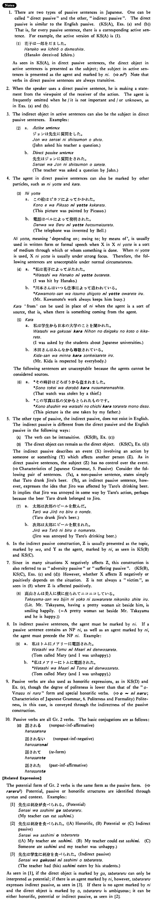

←
DoJG
→
られる (1)
(B. 364)
Example sentences
(ksa).
一郎は花子に騙
された・
騙
されました
。
Ichiro was deceived by Hanako.
(ksb).
ジェーンはフレッドに夜遅くアパートに来
られた・
来
られました
。
Fred came to Jane's apartment late at night (and Jane was unhappy).
(ksc).
私は弟にケーキを食べ
られた・
食べ
られました
。
I got my cake eaten by my younger brother. / My younger brother ate my cake (and I was unhappy).
(ksd).
田中先生は日本へ帰
られた・
帰
られました
。
Professor Tanaka went back to Japan (honorific).
(a).
このビルは二年前に建て
られた
。
This building was built two years ago.
(b).
この本は１９６５年にアメリカで出版
された
。
This book was published in America in 1965.
(c).
私は二年前妻に死
なれた
。
My wife died two years ago (and gave me sorrow).
(d).
原田さんは奥さんに高いコートを買
われた
。
Mr. Harada's wife bought an expensive coat (and he is unhappy).
(e).
林先生は日本の大学のことを話
された
。
Professor Hayashi talked about Japanese universities (honorific).
Formation
(i)
Group 1 verbs
Vneg
れる
話さ
れる
Be told
(ii)
Group 2 verbs
Vstem
られる
食べ
られる
Be eaten
(iii)
Irregular verbs
来る
→来
られる
Someone (X) comes to someone (Y) and Y is unhappy
する
→
される
Be done
